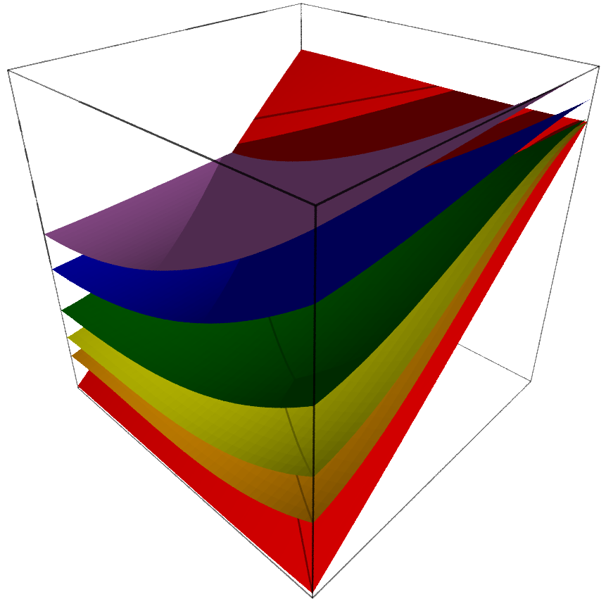

Welcome! This tutorial will demonstrate some of the features of the open source Sage Mathematics software package. Demonstrations will take place directly within the webpage, powered by a Sage Cell Server installed on the server that hosts this site.
Here is a a Sage Cell. You may enter anything you would like here, and assuming it's valid Sage code (Python), it will be evaluated when you press 'Go!'.
Experiment! You can't mess it up - at the very worst, you will receive an error message.
Links to the tutorial pages: |  |